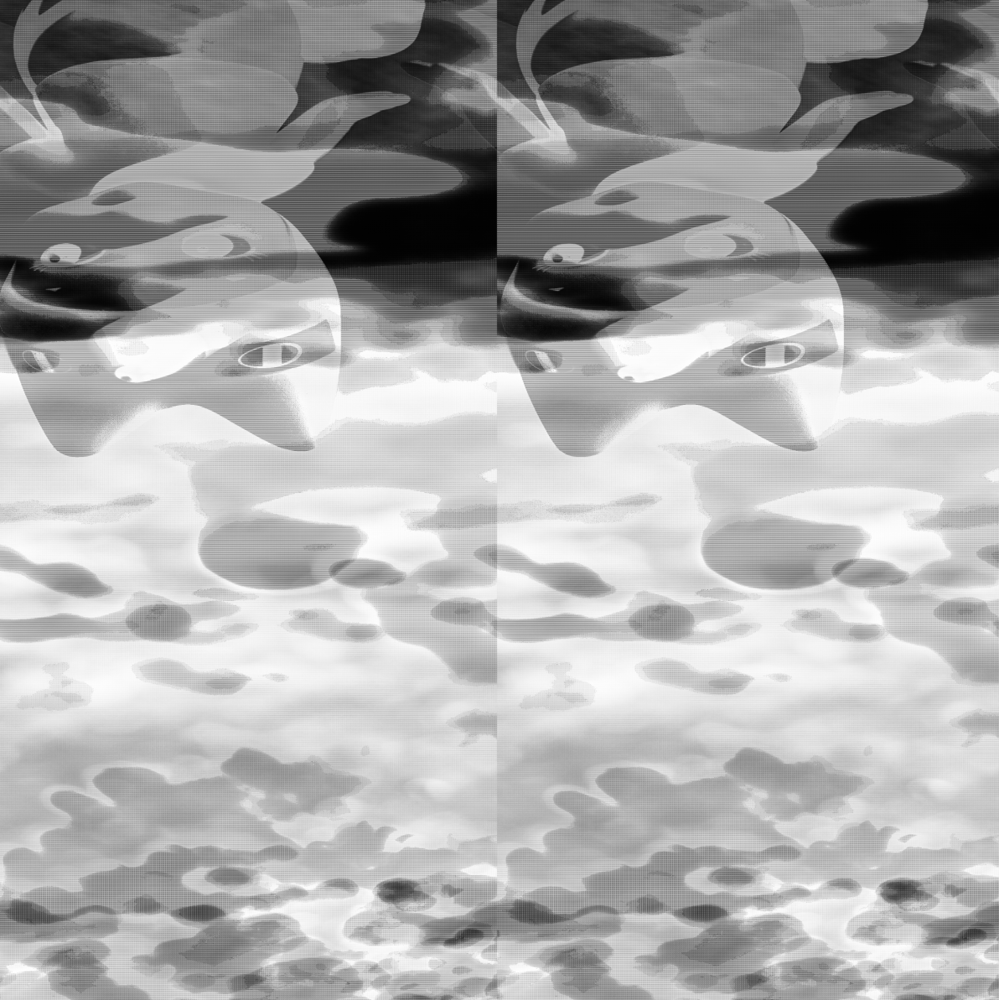

2D Artwork
Glicth Art: Sonny in San Francisco
Sonny in San Francisco is a glitch art piece created with audacity. I turned the image into raw data to run it through Audacity and then turned it back into an image file afterward to create a distorted version of this once colorful image of a good day. It is meant to be a representation of how a good memory can over time become faded, as we focus less on the positives and joys of life at times. Having this be a glitch artwork adds to its meaning as it also relates to how the internet and social media have begun to distort our perceptions of life and expectations in our offline lives.